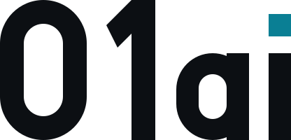

Design system · v1
Zero. One. Everything.
One system for the whole 01 family. It was built for the most demanding page first, the private 01ai showcase, and then stress-tested on the two that face customers: 01 Agency and 01 Workspace.



01
Logo
A heavy, geometric wordmark you can read at a glance. The dot of the i is the only colour: a cyan signal, always on. The mark is "01." in a graphite tile, and the full stop is the same signal.
Primary, on graphite. Clear space on every side: x, the width of the 1's stem. Minimum 24px tall on screen.

Reverse, on platinum or white. The signal dot stays cyan-deep (#0A7F94) for contrast.

The 01 mark: app icons, favicons, avatars.
01 Agency lockup: mark + name in Geist 500.
01 Workspace lockup: same build, same spacing.
Never
- Stretch or squash it
- Add glows or effects
- Set it on a busy image
- Use it under 24px
02
Colour
Graphite, platinum, a little light. Graphite carries almost everything. Platinum is for type. Cyan is the signal. Green means live. Purple and amber appear rarely, and only when something is unusual.
Balance
Graphite 72 · Platinum 17 · Cyan 7 · Green 2 · Purple 1 · Amber 1
03
Type
Geist for everything you read, set big, tight and left-aligned. Geist Mono, in capitals with open tracking, for everything the machine says: labels, status, numbers. Both are free and open (SIL OFL).
Unyielding.
The best agents.
Adaptive routing, every token.
Connect once. From then on the agents read it, write to it and act in it on your behalf.
Body copy is platinum-2 on graphite at 1.55 line height, never wider than about 65 characters.
SERVER v1.0 // NODE: WAR ROOM // UPTIME 99.999%
04
Motion: routed
Nothing in 01 floats, bounces or fades for decoration. Things travel along a trace, lock into place, resolve from 0s and 1s, and count in steps. Fast in, hard stop. Under reduced motion every one of these becomes instant.
Route
Arrive along a trace, never from nowhere. The line draws first, then the element follows it.
Lock
The 01 ease, cubic-bezier(.2,.9,.1,1): almost all of the travel happens at once, then it settles hard.
Decode
Headlines resolve left to right from 0s and 1s. 14ms per character, 8 characters of noise ahead.
The maximum power stack.
Tick
Numbers count in visible steps, steps(6), each with a tick. Never a smooth tween.
0
| Token | Value | Use |
|---|---|---|
| --e-lock | cubic-bezier(.2,.9,.1,1) | Anything arriving: reveals, panels, chips |
| --e-route | cubic-bezier(.6,0,.2,1) | Lines and traces drawing |
| --e-tick | steps(6,end) | Bars, counters, meters |
| --d-tick | 80ms | Hover feedback |
| --d-snap | 180ms | Colour and border changes |
| --d-route | 320ms | Reveals, trace draws |
| --d-scene | 900ms | Camera moves, progress rails |
05
Sound
Small, precise machine sounds: ticks, buzzes and high pitches. All six are synthesised live in the browser, so there are no audio files. Sound is off until the visitor turns it on, and the choice is remembered.
- Tick
Hover, and every line of a feed.
NOISE · HP 5.2kHz · 12ms - Click
Any press.
SINE · 2.4kHz · 30ms - Chirp
Something new arrived: a model, an agent, a commit.
SINE · 3.2→6.4kHz · 60ms - Confirm
A stage passed, a task done.
SINE · 1.6 + 2.4kHz - Buzz
Blocked, refused, failed.
SAW · 118Hz · BP 900Hz · 90ms - Deny
A field needs fixing.
SQUARE · 220→180Hz · 80ms
06
Components
No boxed callout cards. Structure comes from hairlines, corner ticks and type. When a cluster of data needs a boundary, it gets two corner ticks, not four walls.
Buttons
A cyan trace draws across the top on hover. Platinum fill for the one action that matters.
Frame
// Models online
1,042
Corner ticks, label in mono, number in mono. Used for live data only.
Field
Underline only; turns cyan on focus.
Status line
SERVER v1.0 // NODE: WAR ROOM // UPTIME 99.999%
Top right of every 01ai page. The dot pulses green.
Hairline list
- 01Endless skills.
- 02Adaptive routing.
07
Voice
A showman with total, unapologetic confidence. Short sentences. Superlatives stated as fact. No hedging, no small print, and never a word about exclusivity: the bar says it for us.
The most powerful agentic AI.
One of the most capable AI platforms.
1000+ models, and more always coming.
Supports a growing range of models.
Most people won't finish this.
By invitation only.
It updated again while you read this.
We aim to ship improvements regularly.
08
Built from the atlas
Every move in 01 started as a specimen in the Visual & Motion Atlas. Here is what was taken, and how it was changed to become 01's own.
| Atlas piece | Where it went in 01 | What changed |
|---|---|---|
L05 Text scramble and decode | Every headline, the "decode" motion token | Noise is only 0s and 1s, so the scramble spells the brand's name |
L01 Layered parallax | City circuits camera | Moved into 3D: pointer parallax plus a scroll dolly deeper into the board, always angled |
M11 Parallax & layered depth | Fog layers in the city | Depth comes from fog and light, not stacked flat planes |
L06 Kinetic hero typography | Display headlines, Origin facts | Lines step in on an off-centre diagonal instead of a centred stack |
L11 Controlled marquees | "Powered by 01ai" ticker | Kept the pause control; slowed it to 70 seconds a loop |
A03 Archival telemetry / CRT | War-room feeds | No scanlines or glow; clean mono data, values tick in steps |
S19 Terminal / CLI | Status line, node log, changelog | Terminal grammar for the machine voice only, never for body copy |
M02 Staggered reveals | Routed reveals, integrations wall | Short 14ms stagger and a hard lock, not a soft cascade |
E09 Cards, borders & elevation | Frames | Cards removed entirely; replaced by corner ticks and hairlines |
D08 Cinematic cyber system | Token structure | Swapped neon for graphite and platinum, so it reads expensive, not gamer |
A25 Audio-reactive generative | Sound kit | Turned around: the interface makes the sound rather than reacting to it |
| Hover list | Agent roster | Cursor image dropped; a cyan trace runs under the row instead |
| Logo cloud marquee | Integrations wall | Made static, filterable and searchable, with live dots |
| Theme kit 01 · Matrix | DNA strand on Agents | Binary glyphs kept; rain replaced by a slow, faint helix |
The system itself is now in the atlas too, as theme kit 09 · 01 Graphite, with tokens, components, a live background and a zip download.
09
The family
Only Agency and Workspace face customers, so the system has to hold up there. Same tokens, same type, same motion. What changes is the volume.
We build what others can't.
01 Agency
- Same city, calmer: pushed back to 50% under the scrim, no war-room feed
- Two clear calls to action instead of a hidden Apply
- Sound off by default and never on hover
- The voice drops one notch: still certain, now selling
// Agents live
38,940
// Tasks today
1,206
// Revenue run
+18.4%
// Throughput · 24h
// Alerts
- ● All clear
- 2 reviews due
// Latest
- AGENT_2561 >> INVOICE SENT [ £4,200 ]
- AGENT_8013 >> PR MERGED [ checkout -82% ]
- AGENT_5110 >> LEAD QUALIFIED [ score 0.94 ]
// Models
1,042
01 Workspace
- Density goes up: mono numbers and corner-tick frames everywhere
- Green carries "live" and "good"; amber is the only warning colour
- Sound is on for alerts only: a chirp for new work, a buzz for a blocker
- No 3D city: the work is the hero. The logo shrinks to the sidebar
10
Files & open items
Everything is SVG or plain CSS, ready to drop into any build.


Still to confirm
- TICKERThe 40 "powered by 01ai" companies show as Company 01–40. Real names go in only with each company's written permission.
- ORIGINThe four team time zones and the year-by-year milestones are drafts. Swap in the real hubs and dates.
- APPLYTo email applications to Nicolas, add RESEND_API_KEY and APPLY_TO (his address) to the Vercel project. Until then the form offers the applicant a copy instead.
- LOGINThe sign-in form is front-end only. Connect it to the real account service before launch.
- INTERFACEThe chat preview plays scripted runs and says so on screen. Hook it to the real agent API when ready.